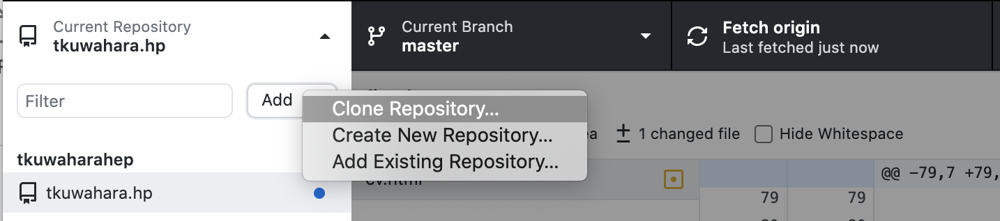

Overleaf + Git
Overleafは複数人で原稿を同時編集するにはとても便利なオンラインLaTeXエディタではあるものの、 オフラインの自分のエディタのほうが慣れていることも多い（overleafも様々なエディタを用意してくれている。用意されているカラーコードがどうにも慣れなくて、カラーコードを自分で編集する方法があればもっと良かった）。 version管理もしてくれるGithubとの連携で、オフラインでの編集をしようとしたが、Github連携そのものは有料版でのオプションだった。 なんだと思いしばらく放置していたのだが、有料なのはGithub連携に関してのみで、Gitは別に有料版オプションでも何でもなかったのを見逃していた。以下に、備忘録としてOverleaf + Gitを用いてversion管理をしつつオフラインでのファイル編集を行う方法を簡単に書き記しておく。
- OverleafのMenu欄からGit linkを獲得
- オフライン上でレポジトリの追加 個人的に用いている、GitHub Desktopをベースにすすめる。 レポジトリの追加は、GitHub Desktopの左上タブを開くと追加に関するタブがでてくる。


該当箇所をクリックすると、レポジトリを複製する方法が出てくるので、OverleafでコピーしたGit linkからローカルなレポジトリに複製すればよいだけである。